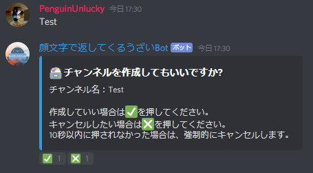

読み込み中 読み込み中
読み込み中 読み込み中Botの詳細
Discord上で動いているBotです。
名前の通り、顔文字を返してきます。
「おはよう」
と発言すると
「~~~ヾ(＾∇＾)おはよー♪」
などを返して来ます。
さらに、皆さんが喋ることによって、自動で学習します。
初期設定コマンドを実行すればおｋ！！
顔文字で返してくるうざいBot では、自動学習を採用しています。
自動学習といっても、小さな頭でまだまだ成長途中です。
簡単に自動学習システムを説明すると、以下のような感じです。
※もちろん公開している範囲のみ記載しています。
利用禁止ユーザー登録されると、Botが利用禁止ユーザーの処理をしなくなります。
どの処理はされないかについては、以下の通りです。
利用禁止サーバー登録されると、Botが自動で退出します。
招待されても、利用禁止サーバー登録されていると、自動で退出します。
Botの機能系
下記のコマンドを実行するとレベルアップ通知を送らないようにできます。
チャンネル作成とは
フリーチャンネルといい自分専用のチャンネルを作ることができます。
チャンネル作成のやり方
フリーチャンネルを作りたいサーバーに チャンネル作成 という名前のチャンネルを作ります。
そのチャンネルで喋るとフリーチャンネルを作るか聞かれます。

Botに管理者権限がある場合、発言者にチャンネル編集権限が付与されます。
なお荒らし対策としてWebhookは作成できません。(管理者権限をもっている人が作成した場合は作成できます。)
Helpコマンドや、Jankenコマンドなどのリアクションを押してアクションが起きるタイプの問題
リアクションが全部出てから、押してください。
はやく押してしまった場合は、タイムアウトまでに押しなおして下さい。
権限エラーの可能性があります。(もし権限エラーだった場合は、通知が来ると思います。)
埋め込みメッセージを編集するアクションがあるコマンド ( help , lookup など... ) で起きる問題です。
理由は、プログラム側の問題なのですが、私の力では直すことができません。
解決法は、再度コマンドを実行してください。
退出する理由は、利用禁止サーバーに登録されている可能性があります。
公式サーバーの #質問 で聞いてみてください。
利用禁止サーバーとは？
確認済みユーザーとは、PenguinLuckyに確認された、安全なユーザーです。
確認済みユーザーになってできることとは？
グローバルBan
※グローバルBan機能は
まだ実装されていません
運営が危険な人物と確認したユーザーをいろんなサーバーからBanするシステムです。
Banしてほしくない場合は、下記のコマンドを実行すると無効にできます。
下記のコマンドを実行すると有効にできます。
なお、有効にした際は、グローバルBanリストに載っている人を一度Banします。(確認メッセージが出ます)
権限が足りない場合
サーバの設定 > ロール > 顔文字で返してくるうざいBot から 管理者 か メンバーをBan を有効にしてください。
グローバルチャット
Discordのチャットは、普通に話すと、同じサーバー内の人としか会話できませんが、Botを使用して、サーバーの壁を超えて、いろんな人と会話することができます。
Botが既にサーバーに参加している前提で説明します。
サーバーを作成してから、3ヶ月以上経過していないと、グローバルチャットに参加することができません。
ですが、作成者(PenguinLucky) から了承を得ると、参加できます。
グローバルチャットにしたいチャンネルに 顔文字で返してくるうざいBot に管理者権限があるか確認したうえで、参加コマンドを実行してください。
グローバルチャットには二種類あります。
種類ごとに参加コマンドが違うので注意してください。
１つ目
普通のメッセージのチャットのようになっているグローバルチャットです。
名前にBotとついていますが、中身は人間です。
Discordの仕様なので気にしないで下さい。
✅：PenguinLuckyに確認された、安全なユーザーです。
🔨：グローバルチャットからBanができる権限を持っているユーザーです。(グローバルBanもする権限を持っています。グローバルBanとは)
📝：デバック機能を体験でき、Botに負荷をかけることを許されているユーザーです。
👑：Botの作成者です。
当Botのグローバルチャットでの荒らし対策
※公開している荒らし対策を下記に記載しています。
(つまり公開していない荒らし対策は記載していません。)